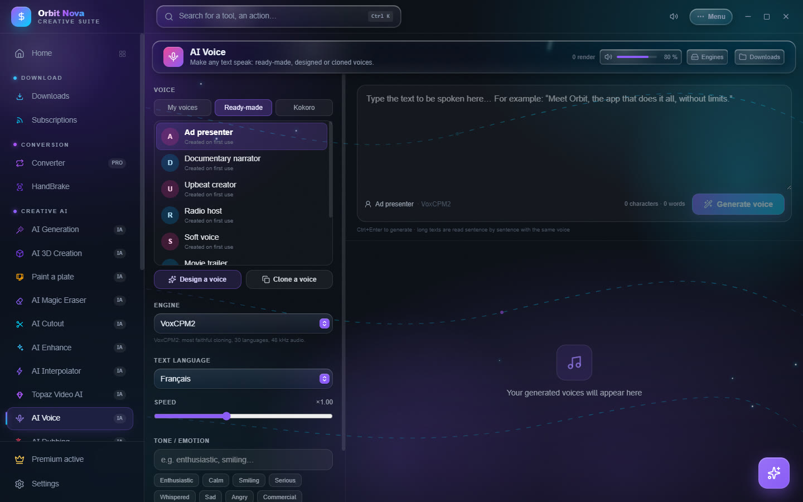
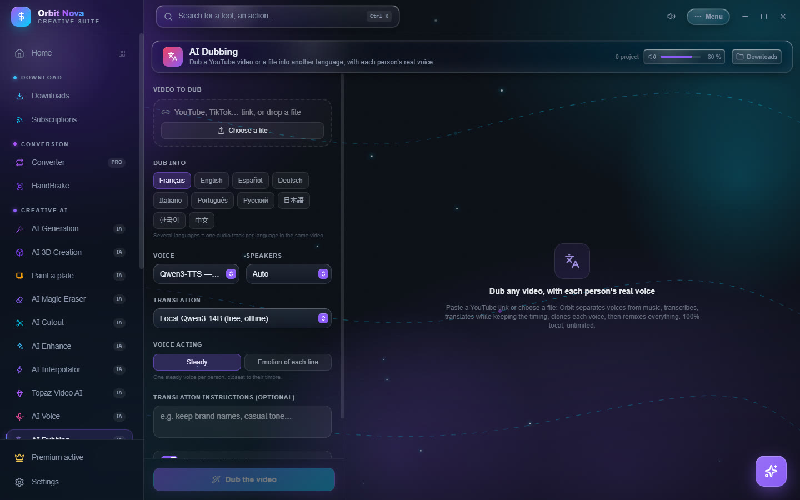
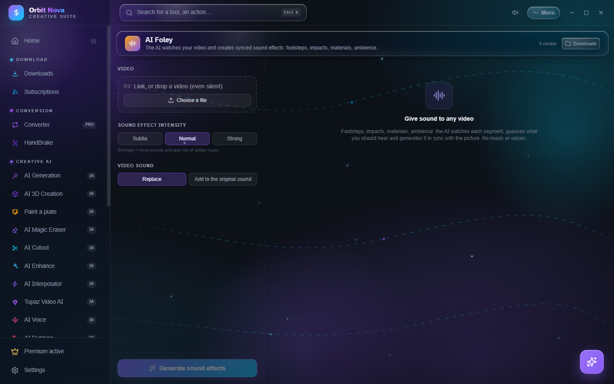
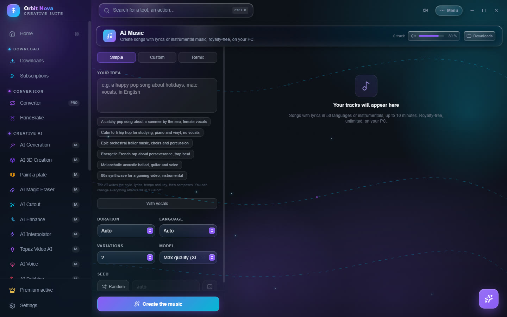
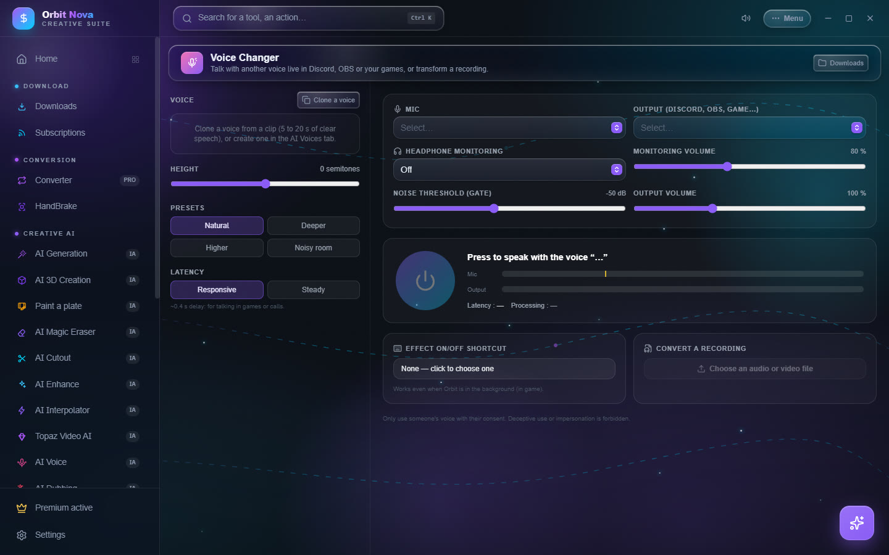

Voice, dubbing and music AI
Five tools to create sound with AI, on your own PC: voice-overs, dubbing a video into another language, sound effects, music, and a live voice changer. They are all part of Orbit Premium and need an NVIDIA graphics card (except Kokoro and the voice changer, which also run on the processor).
Nothing is sent online: no subscription, no character limit, no watermark.
AI Voice
A voice-over studio: write a text, pick a voice, Orbit reads it.


Install an engine
On first launch, Choose an engine opens the list of Voice engines:
| Engine | Strengths |
|---|---|
| Kokoro | Ultra fast and light, works without a graphics card. Ready-made voices (only one French voice). |
| Qwen3-TTS | Creates a voice from a description and clones a clip. Very natural in French. |
| VoxCPM2 | The most faithful cloning, 30 languages, 48 kHz audio. Also creates voices from a description. |
The first install also adds PyTorch (about 3 GB), shared by the three engines.
Generate a voice
- Pick a voice in My voices (Ready, Created or Cloned voices).
- Write the text. Set the Text language, the Speed and, with VoxCPM2, the Tone / emotion (for example "enthusiastic, smiling").
- Generate voice (or
Ctrl+Enter). Long texts are read sentence by sentence with the same voice.
Each render goes to the history: Listen, Export as MP3, Open folder (WAV) or Reuse text,
voice and seed. Files are saved in Downloads\Orbit\Voix IA.
Create a voice from words
Design a voice: describe the voice (gender, age, timbre, accent…), write a Test sentence, then choose 1 take or 3 takes. Listen, keep your favourite take and give it a Name. The kept voice will always sound the same.
Clone a voice
Clone a voice: drop an audio or video clip, then choose the Part to clone (5 to 30 seconds of a single voice) on the waveform. Use this part removes music, sound effects and background noise, then transcribes what is said. Compare Cleaned voice and Original, fix the transcript if needed, then Save voice.
Only clone your own voice or the voice of someone who gave you their consent.
AI Dubbing
Dubs any video into another language, with each person's real voice.


- Video to dub: paste a link (YouTube, TikTok…) or Choose a file.
- Dub into: one or more languages. Several languages = one audio track per language in the same video.
- Voice acting: Steady (one steady voice per person, closest to the timbre) or Emotion of each line (each line keeps the tone of the original: shouting, whispering…).
- Translation: local Qwen3-14B (free, offline) or Claude with your API key. You can add Translation instructions (informal "you", keep brand names…).
- Options: Keep the original track, Add subtitles. Then Dub the video.
Orbit downloads the video, separates voices from music, transcribes, recognises who speaks, translates, clones each voice, fits each line to the timing and remixes everything.
The project then opens in the editor:
- Lines: fix a text, Listen to the original, Listen to the dub, Another take (same text) or Regenerate this line;
- Voices: rename each speaker or replace Their real voice with a voice from the AI Voice tab;
- Export with changes only redoes what changed.
An interrupted dub can be resumed where it stopped. Finished videos are in Downloads\Orbit\Doublage IA.
AI Foley
Gives sound to any video, even a silent one: footsteps, doors, engines, wind, impacts…


- Video: paste a link or Choose a file.
- Sound effect intensity: stronger = more sounds and less risk of added music.
- Video sound: Replace the sound, or Add to the original sound (with the Original sound / Sound effects balance).
- Generate sound effects.
The AI watches the video section by section, describes what it is going to make you hear, then generates
sounds synced to the picture. To fix a section, edit its description (in English preferably) and run again:
only the sounds are redone. Another version gives a variant. Result as MP4 + WAV in
Downloads\Orbit\Bruitages IA.
AI Music
Composes full songs, with or without vocals, from an idea. ACE-Step 1.5 engine (MIT licence: your songs belong to you).


Three modes:
- Simple: describe your idea ("a happy pop song about holidays, male voice, in English"), then Create the music. The AI writes the style and lyrics for you.
- Custom: write the Style and Lyrics yourself (or Write lyrics with AI), choose Instrumental or With vocals, the Duration, Language, Tempo (BPM), Key and number of Variants.
- Remix: drop a starting song, describe the New style and set the Faithfulness to the track (low = very free style, high = keeps the melody and structure).
A one-minute song is composed in under a minute on a recent RTX card. In the history: Export as MP3, Remix this track, Reuse the settings or Redo a section (only that section is recomposed, the rest does not move).
Voice Changer
Speak with another voice in real time, in Discord, OBS or a game.


- Install the Voice Changer (without an NVIDIA card, it runs on the processor).
- Pick a Voice: a voice from the AI Voice tab, or Clone a voice from a 5 to 20 second clip of clear speech.
- Choose the Mic and the Output. For Discord or OBS, install a virtual audio cable (VB-CABLE for example) and choose it as the output: then select it as the microphone in Discord.
- Start.
Useful settings:
- Latency: Responsive (about 0.4 s delay, to talk in a game or a call) or Stable (about 0.65 s, three times less computing, for a modest or very busy PC);
- Height (the pitch, in semitones), Noise threshold (gate), Output volume, Headphone monitoring;
- Effect on/off shortcut: works even when Orbit is in the background (in game).
Convert a recording applies the voice to an audio or video file instead of the microphone (stop the live mode first).